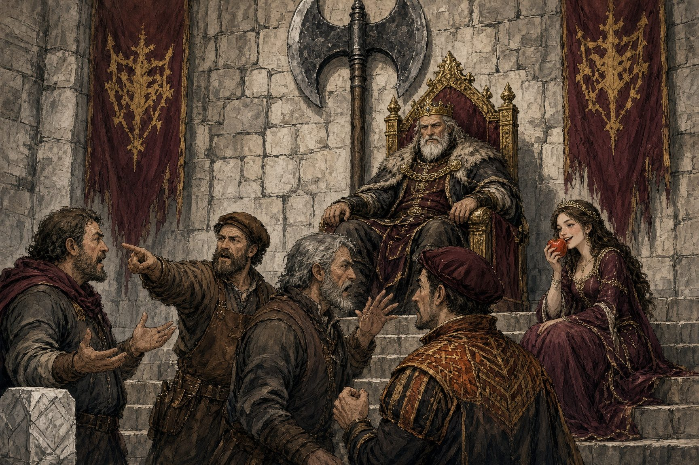

There once was a king whose kingdom was without measure. Everyone measured things in their own way, and so no one could agree on anything. This made trade difficult.
A clothier would sell three feet of linen, and the tailor would pace it out heel-to-toe and find only two and a half, because the tailor had enormous feet and the clothier had dainty ones he was quite vain about. A carpenter swore a board was ten feet long. A mason swore it was eight. Both stood on the board in their stockings, toes wiggling, jabbing fingers at each other's chests until the board snapped and they had to start over on two smaller boards.
"If we're settling things by feet," said the Princess, who was very practical and sat on the market wall eating an apple, "the goose seller should be the richest woman in the kingdom."
At last the guilds dragged their quarrel to the throne room. The King listened for three days. On the fourth day his face went red to the ears, he rose, and he put his foot down. Literally. It slapped the flagstone like a dropped ham.
"That," he said, "is a foot."
The royal sculptor traced it, cast it in bronze, and bolted it to a pillar in the market square. And there was peace.
"How fortunate Father's foot will never change," said the Princess. "Kings are famous for staying the same size."
Years passed. The King grew older, and as old kings do, he swelled. Feast followed feast, and the royal foot spread like dough left too long by the fire, until the cobbler had to slit the sides of every slipper. One morning the cobbler held a slipper against the bronze foot in the square and found the King a full thumb longer than the law.
Word spread by noon. Weavers who sold by the foot demanded the new foot. Everyone who bought from weavers demanded the old one. Merchants bought by the Swollen Foot and sold by the Bronze, and pocketed the difference. A carpenter struck a mason with a level. The chandlers' guild hall burned down, which surprised no one, since it was made almost entirely of candles.
The King, puffing up the throne-room steps, rubbed his aching heel and thought hard. Feet, he decided, were unreliable. But a man's arm stays put. So he laid his forearm on the table, and the sculptor measured from elbow to fingertip, and the Royal Cubit was cast in bronze and bolted beside the retired foot. Peace returned.
"Father," said the Princess, "your arm is also attached to you."
"Yes, dear," said the King. "That's what makes it so convenient."
That evening the Princess fell into step beside the Lord Chancellor in the long corridor. "It does seem," she said lightly, "that a measure ought to belong to no one at all. A bar of iron, perhaps. Iron doesn't go to banquets."
The Chancellor patted her hand without slowing. "A measure with no man behind it, Highness? Like a crown with no head." He chuckled at that all the way down the corridor.
The Princess stood very still, watching his back, her lips pressed thin. The next morning, by royal decree that her father did not quite remember signing, the court gained a Royal Trainer for the Maintenance of the Royal Body.
The King grumbled. He folded his arms over his belly and refused to touch his toes. Then the Trainer handed him a wooden sword, and the King's eyes lit up like a boy's at a fair. Within the month he was swinging the royal mace every dawn, roaring at the practice dummies until his shirt stuck to his back. His forearm hardened. It thickened. It grew.
The Princess watched from the window with an apple. "Doesn't Father look well?" she said to the Chancellor, who had just been handed a report about the rope-walk.
The rope-walk had become a battlefield. Ropemakers and brickmakers fought for three days over whether a coil was forty cubits Before Exercise or thirty-eight After, and nobody could tell who won, because they kept tying each other up. The guilds hauled their bruises back to the throne room, and the shouting shook dust from the rafters.
The Princess stood, brushed off her skirt, and waited for a gap. "As I was saying in the corridor," she said, and the Chancellor found something fascinating about his shoes. "We need a foot that is no one man's particular foot. Pick a length. Any length. Mark it on something that will never eat, never age, and never take up swordplay."
The room went still for exactly one breath.
Then the lawyers erupted. By what authority was a foot a foot if it was nobody's foot? The philosophers clutched their beards. Could a foot exist apart from a footed being? Was it not merely the Idea of a foot? And did the Idea of a foot have toes? Two of them began shoving over the toes. The master masons pounded the floor with their staves and roared that their grandfathers' grandfathers had built the cathedral in Old Bishop's Thumbs and it hadn't fallen down yet. A philosopher fainted backward into the arms of a lawyer, who dropped him.
The King said nothing. He crooked one finger at a page.
The page ran off and came back staggering, bent nearly double under the King's Axe: the great black-hafted thing that hung behind the throne, its head as broad as a shield. The King settled it across his knees and very slowly drew his thumb along the edge.
A faint, dry whisper. Every eye in the room followed that thumb, and the shouting died one throat at a time.
"This axe was my father's," said the King mildly, "and his father's before him. It has never been to a banquet. It has never touched a practice sword. It has not grown or shrunk a hair in a hundred years." He turned the haft toward his daughter. "Choose your length, my dear."
The Princess set her finger on the haft without a moment's hesitation, as if she'd chosen the spot years ago. The royal sculptor cut a notch there, deep and clean.
"From this day," said the King, "a foot is the distance from the head of this axe to that notch. Anyone who disagrees is welcome to come and measure it."
No one came to measure it. The lawyers discovered the proposal was legally sound. The philosophers concluded the Idea of a foot was quite real enough for practical purposes. The masons cleared their throats and studied the ceiling.
And so the kingdom got its foot, belonging to nobody at all. Trade flourished. The King grew fatter, then thinner, then fatter again, and no one gave his feet a second glance. The Axe went back on the wall behind the throne, where it remained the measure of every foot in the land and the final measure of every dispute, though it was almost never needed for the second, because everyone knew exactly how long it was.
"A good measure," said the Princess, finishing her apple, "keeps the axe on the wall."